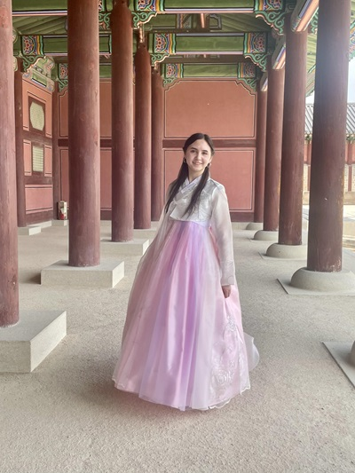

Japanese

During my time at the University of Rhode Island, I studied Japanese language and culture. I took language, history and culture classes.
こんにちは、私の名前はアリッサ・コルソンです。しゅっしんは、マサチューセッツのウェストウッドです。ロードアイランド大学の学生ですした。せんこうは、コンピューターかがくと日本語ですした。子供の時、アニメを見たので、日本語を勉強しているんです。自己紹介をしたりよやくしたりレストランで食べ物をたのんだりできます。しょうらい、日本でかんこうしたり神社に行ったりカラオケを歌ったりしたいです。観光して着物を着て日本の食べ物も食べたいです。よろしくおねがいします。
My Japanese Projects Website
Korean


My Junior year I spent the summer in South Korea, where I studied the basics of the language and took culture classes; all the while spending time exploring Seoul and the rest of the Korean penninsula.
Projects
My final research paper for my seminar class diving into the topic of acceptance of foreigners in Japan, and if linguistic and cultral skills affact quiality of one's experiance.
My final project for LAN 220, where I looked at the effect of listening to music in other languages can impact language skills.